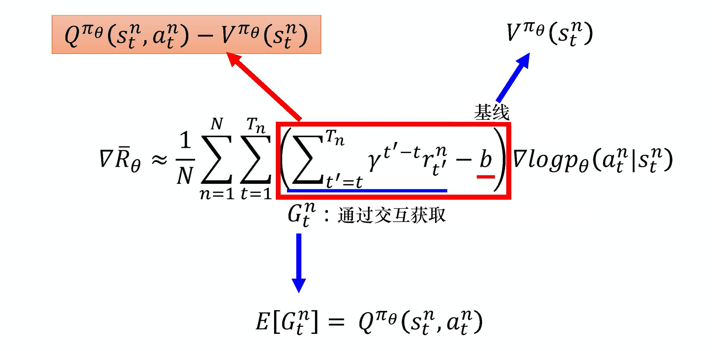

Actor-Critic
Actor-Critic 算法
很显然，REFINFORCE 因为用的是大量采样，所以和之前蒙特卡洛的缺点一样，一局结束才能更新，样本效率极低。每次做策略梯度，每次更新参数之前都要做一些采样时，采样的次数是不可能太多的，我们只能够做非常少量的采样。所以方差也会很大，如果这次正好采样到差结果，那就不好办了。
所以引入了 Actor-Critic 算法，核心思想是：利用 Critic 网络来评估当前策略的好坏，然后 Actor 网络根据 Critic 的评估结果来更新策略。
-
Actor (策略)：一个策略网络 \(\pi_\theta(s)\)，它接收当前状态作为输入，输出一个动作的概率分布。Actor 的目标是学习一个好的策略，使得智能体可以获得尽可能高的回报。
-
Critic (值函数)：一个值函数网络 \(Q_\omega(s, a)\) 或 \(V_{\omega}(s)\)，它接收当前状态（和动作）作为输入，输出一个对当前状态（或状态-动作对）的评估值。Critic 的目标是准确地评估当前策略的好坏。
这种「相互博弈」的思想其实在机器学习领域很常见，GAN 也有类似的意思。
之前的 REINFORCE 的梯度计算：
即公式中的 \(G_t\)，需要等一轮采样完成之后，才能计算，我们认为不好。所以现在引入了 Q 网络，即 \(Q(s, a) = G_t\)，某个时刻 t 传入当前的状态 s 和采取的动作 a，可以算出其可能的价值，即变成：
有一个问题，哎呀，不还是得采一堆轨迹吗？采交互数据这件事，两边都要做。 AC 省掉的不是交互，而是「等整条轨迹走完才能算分」。REINFORCE 因为 \(G_t\) 的存在，游戏没结束就算不出来。一局 1000 步，前 999 步都只能干等。而 AC 则不需要，公式中的 t 不要求必须完整，可以是 1 步、5 步。
其他几个好处：
- 方差更小。 \(G_t\) 是一条随机轨迹的回报，这次运气好/差会差很多。\(Q_\omega\) / \(V_\phi\) 是网络对「这类状态平均有多好」的估计，相当于把很多次经验压进一个数，梯度没那么抖。代价是引入一点偏差（网络不准时分数会偏）。
- 能处理没有「一局结束」的任务。 一直跑、永不 done 的控制问题，\(G_t\) 没有终点可等；TD 打分 \(r+\gamma V(s')\) 仍然能用。
训练的方式还是和 DQN 一样，这里还是列一下吧：
这里就有矛盾点：我们上一章节介绍了基于策略的方法，之所以用基于策略而不用 DQN 这些方法，就是因为动作 a 的数量太多，比如一个关节 360 度，按照每一度分割就有 360 个动作，这里引入了 \(Q_\omega(s, a)\)，那不还是回到原点了吗？
关键：虽然都有 \(Q(s,a)\)，但用法天差地别。DQN 中最后算出 Q，要遍历所有的动作 a，从中找到最好的动作；但是 AC 中，Q 的目的就给这一个动作打分，里面的 a 就是采样而来的。它只当评委。全程没有任何一步：遍历动作、比较 Q、选最大。
Advantage Actor-Critic 算法
优势-演员-评论员算法，Advantage Actor-Critic 算法（A2C）是 Actor-Critic 算法的一种改进。在 REINFORCE 算法中，有一个技巧是引入基线。用 \(G(\tau)\) 减去一个值 \(b\)。其中 \(b\) 的取值是对 \(G(\tau)\) 的值取期望， 计算 \(G(\tau)\) 的平均值，令 \(b \approx E[G(\tau)]\)。此时 REINFORCE 算法的梯度：
同理，A2C 就是在 AC 基础上引入了基线，那么还是一样吗，即 \(b = E(Q_\omega(s, a))\)？这又矛盾了，因为之所以有 AC，不就是希望可以不要等采样完整结束再更新吗，现在你要求期望，那还是要等一轮采样完成之后，再去计算咯。
所以不应该是这种做法，有很多方法，其中最标准的是再次引入一个网络 V，这个和用 Q 去替代 \(G_t\) 的本质是一样的，用网络去规避要等采样完成的问题。即此时：

我的天，两个网络！在 DQN 中，我们已经讨论过了，其实强化学习这里的网络训练很不稳，用的是半梯度。所以我们这里合二为一，由于有性质：
这个公式为什么这样，印象中并不是这个
混淆了 「确定性下一状态」 和 「环境随机转移」，再加上 A2C 用的是 单步 TD、采样轨迹，不是全期望。
1. 正确的理论公式（全局期望）
严格贝尔曼期望方程：
展开就是你想的：
✅ 你这个理解，数学上完全正确。
2. 那为什么 A2C 不是这个公式
原因一：A2C 用的是采样得到的真实下一状态
环境交互是采样一条实际轨迹：
不是遍历所有可能 \(s'\)，乘概率求和。这叫样本近似，是所有在线 RL 的通用操作。
原因二：A2C 是 时序差分 TD 单步更新
不需要算所有转移概率 \(P(s'|s,a)\)，环境是黑盒，你根本拿不到转移概率矩阵。机器人、游戏、真实环境，转移概率未知、连续无穷，没法求和。
所以工程上只能：
- 走一步，拿到实际的 \(s_{t+1}\)
- 直接用 \(V(s_{t+1})\) 当未来价值
- 放弃完整概率求和，用样本逼近期望
3. 什么时候才要用你说的「乘概率求和」？
只有一种算法会这么干：表格型、已知环境转移概率 的 动态规划 DP
比如 格子世界、马尔可夫决策过程 理论习题。
- DP：已知 \(P(s'\mid s,a)\) → 完整求和，精确期望
- A2C/PPO/DQN：未知环境、黑盒交互 → 样本采样近似
总结
- 用求和期望：无偏，但算不出来
- 用单个样本：有微小偏差，但能算、能落地、能训神经网络
RL 普遍选择「接受一点点偏差，换工程可行性」。
所以我们把 Q 用 V 来直接替换，直接把期望去掉
为什么可以去掉？不知道，原始的异步优势演员-评论员算法的论文尝试了各种方法，最后发现这个方法最好。当然有人可能会有疑问，但实际做实验的时候，最后结果就是这个方法最好，所以后来大家都使用了这个方法。
这种去掉期望的方法莫名其妙的好，这个最经典的案例是 LMS 自适应滤波，事实上有各种各样学术化的解释，但也都是强行解释，没有完整系统本质的解释。这么粗暴结果却这么好，没有理论支撑，但就是好用。我觉得作为工程师，有的时候确实没必要钻牛角尖。
最终 A2C 使用的是：
其他 AC 网络
其他的我就没有细究了，再看下去就有点太过掉书袋了，太过孔乙己了。这些更细节的知识，用的时候再去看才对。